| Starfighter: Disputed Galaxy, Human Ships | ||||||||||||||||||||||||||||||||||||||||||||||||||||||||||||||||||||||||||||||||||||||||||||||||||||||||||||||||||||||||||||||||||||||||||||||||||||||||||||||||||||||||||||||||||||||||||||||||||||||||||||||||||||||||||||||||||||||||||||||||||||||||||||||||||||||||||||||||||||||||||||||
|
Human Ships
01. Starfighter (0 kills needed) How to read the Ship Tables Each ship is rated in its ability as a dogfighter, long range sniper, utility craft, specialty craft, and for its size. Each rating is from A+ (best) to F (worst) except for size, which is a numerical rating.
Dogfighter: This is a rating of the ship's ability in a close range dogfight, fighting at ranges of 2000 or less. Starfighter
Cons: Weak Shields, limited options, speed is only average. A suggested load-out: Weapons: Laser Beam, Type 3 Stinger Torpedo. Utilities: Engine Overdrive. Engine: Enhanced Interstellar Starfighter Engine (with Hyperspace Recharger). How to use it: In the Human Tutorial, I recommend using a Pegasus Shuttle to rack up your first 25 or so kills and your first 50,000 credits, by grinding Courier missions. However, the Starfighter ship is also a very decent choice for following this strategy. The Starfighter loses the pure raw speed of the Pegasus and so will be at a slight disadvantage in ambushes. However, the Starfighter is a much smaller ship (Size Factor 2, far and away the smallest ship in the game), which will make it very difficult for enemy AIs to hit you with unguided weapons. It also has much stronger Shields than the Pegasus and a tighter turning circle. This makes it a superior dogfighter in inexperienced hands and will forgive overconfidence that would get you killed in a Pegasus. For instance, the Starfighter can take on and defeat a Conqueror or a Striker without too much trouble, while such fights would be much tougher for a Pegasus. The Starfighter Hyperspace Recharger engines are also the same price as the Pegasus ones. The main disadvantage that the Starfighter has versus the Pegasus for newbie training is that the Starfighter is less forgiving to newbie mistakes. If the Pegasus pilot finds himself in a situation that is more than he can handle, the Pegasus can pick any escape direction it likes, fire engines, and run. The Starfighter pilot had better have an exit strategy ready to go, because its inferior speed without boosters or Engine Overdrive will make such an escape suicidal. If you fly the Starfighter, be aware of the "X" key at all times! This will fire your boosters and might get you out of a jam. You can also use your smaller size to your advantage. Get just slightly off-axis to your target while you attack them. Your target will struggle to bring his weapons to bear on you; meanwhile you can get in several free shots. 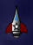 Besides being the new player's ship, Starfighters are sometimes used by very experienced Starfighter players to make a point in one-on-one Multiplayer battles. Real life fighter pilots have an axiom: "The superior pilot will win, even in an inferior plane." This was proven in the Korean War when U.S. pilots in F-86 Sabres were successful in attacking MiG-15s despite the measurable superiority of the Russian aircraft. In this sort of battle, Starfighter veterans will most often equip their Starfighter with a Laser Beam, Electromagnetic Orbs, and an Engine Overdrive. The EOD is used to make high speed passes over the superior ships while using the Orbs to disrupt and break up potential locks against them. As the Starfighter passes through, it will then land a Laser Beam attack or two, swinging around to make up to four such passes. This sort of attack is often sufficient to destroy a single enemy fighter, no matter the type, and few but other veterans can effectively counter the tactic if they are limited to another fighter. This tactic is also often used in the Pegasus Shuttle, below, but is less effective due to the Pegasus's thin Shields. Ship Cost: 500. Engine Costs: Enhanced Booster: 500; Overclocked: 2000; Enhanced Propulsion: 2250; Pulse Core: 4500; Interstellar: 10,000; Enhanced Interstellar: 11,000. Best against: Drones, Heavy Drones, Sprinters, Conquerors, Guardians.Weak against: Anything maneuverable with heavy Shields, particularly Defenders, Shredders, and Marauders. Back to top Triton Cargo Ship
Cons: Takes an age to make a turn, broadside is an enormous target, limited offensive options. A suggested load-out: Utilities: Engine Overdrive, Tractor Beam. Mine: Thunder Bolt Mines. Proximity: Damage Bubble. Mining Laser: Type LR 3 Mining Laser. Engine: Enhanced Interstellar Triton Cargo Ship Engine (with Hyperspace Recharger). 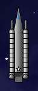 How to use it: Don't. Well, not if you have any choices, really. The only serious use the Triton can be put to is in very early game mining or Courier missions when you are incredibly desperate for money. The Triton has good speed (in a straight line) and very tough Shields and as a result, is a tough target for enemies to destroy. The bad news is that the Triton has virtually no offensive power of its own. It has no Weapon slots and its space bar Laser Cannon is all but useless due to the Triton's frightfully slow turn rate. If attacked, the Triton's only hope is the clever use of the slots it does have. One possibility is to use a Tractor Beam in one of the Triton's Utility slots to drag attacking ships into a Damage Bubble or Thunder Bolt Proximity weapon surrounding the ship. Another option is to use Thunder Bolt Mines, then use the Engine Overdrive to flee the area (and the battle) before the mines activate. If you must use this ship, though, it's best to limit yourself to Courier missions using hyperspace, stopping at the asteroids you pass to supplement your income. Run up your money as quickly as possible so that you can trade this ship in for something else. Ship Cost: 6000. Engine Costs: Enhanced Booster: 6000; Overclocked: 24,000; Enhanced Propulsion: 27,000; Pulse Core: 54,000; Interstellar: 127,000; Enhanced Interstellar: 132,000. Best against: Nothing.Weak against: Everything. Back to top Pegasus Shuttle
Cons: Very thin Shields, many weapons can kill it in one shot, no better offensive options than the Starfighter. A suggested load-out: Weapons: Laser Beam, Type 3 Stinger Torpedo. Utilities: Engine Overdrive. Engine: Enhanced Interstellar Pegasus Engine (with Hyperspace Recharger). How to use it: If you play the game properly, then the Pegasus should be your first ship. Load it per the suggestions above, following the advice of the Human Tutorial on this site and you'll do very well. The Pegasus will earn you your first 50,000 money and your first 20 or 30 kills, giving you a firm foundation for the start of your human career. Used in this manner, the Pegasus will primarily encounter ambushes of Drones and occasionally, Heavy Drones. Deal with these at the maximum possible range of your Type 3 Stingers. It will take two Stingers to destroy a Drone, and five Stingers to destroy a Heavy Drone. The Laser Beam is the perfect starter weapon for the Pegasus, and allows you to learn dogfighting techniques in the early game, and will still be a perfectly serviceable weapon into the mid-game if you choose to keep the Pegasus a little longer. The Interstellar Pegasus Engine will allow you to rapidly complete Courier missions and build up your income. In fact, Pegasus plus Hyperspace Recharger plus Courier missions is one of the fastest ways to make money in Starfighter, and it's available to you almost from the very beginning of the game. 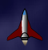 Very advanced Multiplayer Starfighter players sometimes like to use the Pegasus to harrass and intimidate less-experienced Starfighter players in MP sectors. These players use a variety of weapons layouts and primarily work by buzzing much larger targets, trying to harrass them into flight or a panicked destruction. This guide covers some of these tactics in the Starfighter section above. The Pegasus is a much harder ship to make these tactics work in due to its thin Shields. If an opposing ship gets a lock with a Laser Beam or Tractor Beam for even a fraction of a second, the Pegasus is done. Ship Cost: 500. Engine Costs: Enhanced Booster: 500; Overclocked: 2000; Enhanced Propulsion: 2250; Pulse Core: 4500; Interstellar: 10,000; Enhanced Interstellar: 11,000. Best against: Drones, Heavy Drones, Fighters, Weavers, Raiders.Weak against: Everything else. Back to top Astro Fighter Ship
Cons: Poor speed, relatively weak Shields for a dogfighter, limited weapons. A suggested load-out: Weapons: Plasma Cannon, Thunder Bolt Torpedo. Utilities: Energy Cell, Tractor Beam. Engine: Astro Fighter Ship Pulse Core Engine (1.6x top speed, 1.2x boost). How to use it: The Astro Fighter Ship is all about dogfighting. It is the most maneuverable ship in the game, with a great size for dogfighting (small), and able to move very precisely and well in tight situations. A properly piloted Astro should never hit a mine, for instance, and it can avoid many of the other pitfalls of less maneuverable ships. The downside, particularly for dogfighting, are the Astro's thin Shields (100). A Thunder Bolt Torpedo will make short work of an Astro, and a pair of Thunder Mines are a nearly immediately deadly threat. Still, as an early game dogfighter, and particularly for learning dogfighting techniques, the Astro is unsurpassed. The build that I recommend for this ship has this idea in mind, and shouldn't be used much past 250 kills or so, but until then will be a great way to learn close-in fighting. After 250 kills or so, you will start to encounter multiple ships armed with Thunder Bolt weapons, and the Astro should be traded in for something else. Until then, equip the Astro with a Plasma Cannon and a Thunder Bolt Torpedo of your own. Both of these weapons are short range, and the Plasma Cannon is unguided. However, your Astro is extremely maneuverable and you should have little difficulty aiming this weapon. Be careful of the splash! Within 100 range, the Plasma Cannon does splash damage, but the Astro's limited speed will actually be to your benefit here. It should keep you from rushing targets and getting yourself killed. Four blasts from the Plasma Cannon will destroy an alien Freighter, and three or less will destroy almost any other alien ship. Larger targets can be softened up with the Thunder Bolt Torpedo you carry. I recommend equipping a Tractor Beam -- use it! In fact, your best move against targets with 200 or more Shields should be to immediately immobilize them with the Tractor Beam. That will limit the damage you take and make practicing with your Plasma Cannon much easier since your target will be relatively motionless. Be careful that the ship you Tractor isn't so close that you bring it within 100 distance; if the target does get that close, switch to your space bar Laser Cannon. The Energy Cell is recommended both to feed the energy-hungry Plasma Cannon and to help rebuild your Shields. With less than 100% energy, activate the Energy Cell and then hold down your "C" key! This will transfer the Energy Cell's output directly into your Shields as long as you have the "C" key held down. The downside of this build is that you're going to be useless against ambushes and against other large groups of ships. This build is intended to practice dogfighting, not long range sniping. If you encounter an ambush, fire your boosters ("X" key) and leave the ambush behind. If you want to attack ambushes, you're going to want another ship... Ship Cost: 750. Engine Costs: Enhanced Booster: 750; Overclocked: 3000; Enhanced Propulsion: 3375; Pulse Core: 6750; Interstellar: 15,000; Enhanced Interstellar: 16,500. Best against: Drones, Heavy Drones, Freighters, Raiders, Hunters.Weak against: Defenders, Enforcers, Destroyers, Oppressors. Back to top Eos Proximity Defense Ship
Cons: Relatively weak Shields and only average fighter maneuverability. A suggested load-out: Weapons: Laser Beam. Utilities: LASS Stealth System. Mines: Thunder Bolt Mines. Proximity Weapons: Thunder Bolt, Proximity Blaster, Damage Bubble. Engine: Enhanced Interstellar Eos Engine (with Hyperspace Recharger). How to use it: The Eos is an easy ship to use, but a hard ship to use well. It wants to be a dogfighter, but it is quite large for a dogfighter, and has relatively thin Shields. Still, it's a ferocious opponent up close, and to use it correctly, you really have to use the Eos aggressively. The load-out that I have recommended is geared toward that end. The Eos has no good long-range options, and is not a ship geared to long range combat in any event. As a result, the LASS Stealth System will be your initial defense from long range attack. Activate it, then move into combat. As soon as you come under visual attack, activate your Damage Bubble. This will do continuous damage to enemies in your immediate vicinity and will act as a force multiplier for your other weapons. Primary among these other weapons will be your Laser Beam. This weapon is intended to soften up targets so that your Damage Bubble can kill them. Since this is your only primary weapon, the skill in using the Eos is in piloting it. The closer you can get to your enemies, the more effective your proximity weapons will be. Since you will have limited shots with these weapons, you need to pilot in such a way as to bring as many enemies as you can within range of your weapons before you fire them. This will require skill, but will require nerve even more. The Eos Shields are not truly up to the task that you'll be asking of them, and you'll have to hope for frequent and lucky bonus drops, particularly health and ammo drops. As you approach weak ships, fire off Proximity Blaster shots. This will one-shot kill Drones, Heavy Drones, and Sprinters, and seriously damage Weavers and Fighters probably sufficient for your Damage Bubble to kill them. Larger targets can be met with your Thunder Bolt proximity weapon. This will do a great deal of damage to nearby targets, particularly when combined with the effect of your Damage Bubble. This combination will be particularly effective against ambushes -- dive into them! Gatherers and other particularly large targets should have your Thunder Bolt Mines dropped on them. After dropping them, move off rapidly and on boosters ("X" key). 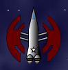 Again, the trick to using this ship well will be in your piloting skill and your nerve, combined with a little luck in the bonus drops you collect. You will run out of proximity weapon shots frequently, and will have to do a good job of keeping track of what you have ammunition for and what is being reloaded as you pick up bonuses. One final trick to remember with this ship: every time you get a Damage Bubble, activate it! The effects of Damage Bubbles stack, so it could be that your Damage Bubbles alone will devastate anything close. In any case, the Eos is not going to be a ship that you use for long. Once you start seeing Thunder Bolt Torpedoes launched at you, it's time to switch to something else. The Eos has no good counter to Thunder Bolt weapons; its Shields are simply too thin. Ship Cost: 2000. Engine Costs: Enhanced Booster: 2000; Overclocked: 8000; Enhanced Propulsion: 9000; Pulse Core: 18,000; Interstellar: 40,000; Enhanced Interstellar: 44,000. Best against: Drones, Weavers, Defenders, Strikers, Gatherers.Weak against: Raiders, Marauders, Guardians, Destroyers, Oppressors, Enforcers. Back to top Satyr Mine Layer
Cons: Easy to kill head-to-head and only average fighter maneuverability. A suggested load-out: Weapons: Plasma Cannon. Utilities: Reverse Power Thrust. Mines: HE Proximity Mines or XHE Time Mines, Stealth Mine, Gravity Mine, Thunder Bolt Mine. Engine: Enhanced Interstellar Satyr Engine (with Hyperspace Recharger). How to use it: The Satyr is far and away the most specialized ship in the game, and is far and away the most difficult ship to use effectively. It is nearly useless as a long range sniper, and not much better in dogfights. With only one regular Weapon and only one Utility slot, anyone who tries to use the Satyr in traditional ways is foolish and will be quickly and easily killed. Most people who try to use the Satyr do so by trying to provoke enemies into chasing them, which is equally foolish. Nobody sane is going to follow a Satyr or its alien counterpart, the Guardian. If they choose to, they will either follow so closely that the Satyr's mines will not have time to arm, or they will follow far away and a bit off axis, pelting the Satyr's flanks with fire, usually of the Plasma Cannon variety. Using the Satyr this way might not get you killed quite as quickly as using the ship traditionally, but it will be a close thing. No, the correct use of the Satyr is all about guile and misdirection. There are two proper ways to use this ship. One requires expert timing and a lot of nerve. The other requires skill and dexterity. The first method involves using the Satyr to lay a mine field, then lure other ships into it. For this purpose, the HE Proximity Mines and Stealth Mines are your best bet. This method requires timing because mines will only remain active for about 15 seconds before they detonate of their own accord. You therefore have to time the laying of your mine field such that enemies will enter it, which means you have to start establishing the mine field while they're relatively close, about distance 2500 to 3000 away, for most enemies. This tactic is going to be most effective against AIs, though you'll get a surprising number of Starfighter players to fall for this in MP sectors too, particularly those that like high speed Engine Overdrive tactics. Lay a field of three to four of each type of mine as quickly as you can, in parallel lines, then place your Satyr on the far side of the lines. With any luck at all, your enemies will rush through the field trying to kill you. This is where the Reverse Power Thrust comes into play. After they move through the field, assuming they survive, throw down a Thunder Bolt Mine, then a pair of Gravity Mines, then activate Reverse Power Thrust away from them, firing near-random shots with your Plasma Cannon as you do so. This will induce a state of sheer panic in most enemies, and is quite effective against AIs as well... do they dodge the Gravity Mines, the Thunder Bolt Mines, or the Plasma Cannon shots? You'll almost certainly nail them. 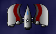 The second means of using the Satyr correctly elevates the latter part of the first tactic to an art form, but requires skill and dexterity in switching between multiple weapon types rapidly. Reverse Power Thrust can be used infinitely, as long as your power holds out, and provides more than sufficient thrust to avoid large fields of Gravity Mines. So let your enemies come to you. As they do, reverse away from them, trading Plasma Cannon shots with Reverse Power Thrust with the Mines of your choice. Gravity Mines will be effective in slowing their advance, particularly if they're alternated with Thunder Bolt Mines. If you want to use this strategy, trade in the HE Proximity Mines for XHE Time Mines instead. The Time Mines will detonate whether or not someone runs into them, doing splash damage in a fairly wide radius. Stealth Mines can also be dropped to further slow their advance and kill them with things they may not see in time. Still, despite these tactics, the Satyr is not a ship I can recommend. It makes perfect sense for both races to have a Mine-specialized craft, but it makes more sense as an AI opponent than a ship an actual Starfighter player should fly. Use some other ship instead. Ship Cost: 2250. Engine Costs: Enhanced Booster: 2250; Overclocked: 9000; Enhanced Propulsion: 10,125; Pulse Core: 20,250; Interstellar: 45,000; Enhanced Interstellar: 49,500. Best against: Gatherers, Freighters, Hunters, Defenders, Conquerors.Weak against: Marauders, Shredders, Raiders, Destroyers, Enforcers. Back to top Argonaut Bomber
Cons: None, really. A suggested load-out: Weapons: Laser Beam, Thunder Bolt Torpedo. Utilities: Engine Overdrive. Mines: Gravity Mine, Thunder Bolt Mine. Engine: Enhanced Interstellar Argonaut Engine (with Hyperspace Recharger). How to use it: The Argonaut is the perfect ship to learn hit-and-fade strike tactics, and to learn dogfighting maneuvering, and the suggested build-up (suggested by mrmocky, a long-time Marauder pilot, the alien counterpart to the Argonaut) is an excellent way to practice those tactics. The Argonaut itself is built toward those tactics, with an excellent mix of speed, acceleration, and maneuverability. Its speed, 12, is among the fastest fighters in the game; it also has a relatively small size going for it. You're going to want to use it in the early game (under 800 or so kills), when you're mostly going to be facing other fighters, and heavier alien ships will be few and far between. In this kind of environment, the Argonaut will shine. You'll primarily be using your space bar Laser Cannon and the Laser Beam to defeat smaller ships with 125 Shields or less (Drones, Heavy Drones, Sprinters, Weavers, and Marauders). Get in behind them and practice your dogfighting skills. Drones, in particular, should be destroyed with the space bar Laser Cannon until you're a particularly good shot. At that point, your Laser Beam can be traded in for a Plasma Cannon, which does even better damage for a much lower energy cost. Larger fast targets should be attacked with your Thunder Bolt Torpedo. Larger slow targets should be attacked with your Gravity and Thunder Bolt Mines, dropping them into the path of larger targets, then using your superior speed to get away. Once the mines have done their damage, you can turn back in to finish off these larger targets. The Engine Overdrive can be used for escape or evasion, or to practice the high-speed sniping tactics that will serve you very well in mutiplayer sectors. 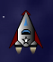 Using a Argonaut in this way, you'll need to get lots of kills quickly and pick up the bonuses; otherwise, the Argonaut doesn't have much endurance. If you run out of energy or ammunition, use your Engine Overdrive to escape the sector and start over in a new sector. Argonauts will generally have a tough time defeating fast, well-armed enemy ships with 200 Shields or more, particularly Defenders, Shredders, Destroyers, and Enforcers, due to this lack of endurance. Ship Cost: 1750. Engine Costs: Enhanced Booster: 1750; Overclocked: 7000; Enhanced Propulsion: 7875; Pulse Core: 15,750; Interstellar: 35,000; Enhanced Interstellar: 38,500. Best against: Fighters, Weavers, Conquerors, Strikers, Hunters.Weak against: Defenders, Shredders, Destroyers, Enforcers. Back to top Iris Armored Support Ship
Cons: Limited Weapons, limited speed, and horrible acceleration. A suggested load-out: Weapons: Laser Beam, Thunder Bolt Torpedo. Utilities: Energy Cell, Rapid Shield Recharger. Mines: Thunder Bolt Mines. Engine: Enhanced Interstellar Iris Engine (with Hyperspace Recharger). How to use it: Don't. It's nearly impossible to recommend the Iris, when there are so many other good ships out there for beginners. The only advantage that the Iris brings to the table are its very tough Shields (200), which will make the Iris difficult to die in in the early game when you are mostly facing much more lightly-shielded foes. But the Iris is going to be nearly equally impossible to make kills in. In exchange for its tough Shields, it has several horrid disadvantages, notably its only average turn rate and its awful acceleration. You will have to grow very familiar with the "X" key when using the Iris. This key (at the cost of 35% energy) will fire your boosters and get you up to combat speed quickly. However, if you overshoot your targets or if they out-maneuver you, which will surely happen, the Iris has no good counters. It takes an age to bring the ship about, and you can forget about close-in precise maneuvering. The main area where you're going to have the advantage in the Iris is in toe-to-toe combats versus dumb AI opponents. If you can bring the Iris's nose to bear on the target, the Laser Beam that I recommend will allow you to land several punishing blows against small opponents such as Fighters and Weavers. They will pound away at you with their weapons -- even heavy weapons -- and your tough Shields will be able to take this punishment with no real problems. Tougher opponents should be attacked with your Thunder Bolt Torpedo. This will soften them up for you to kill with your Laser Beam. With this weapon mix, you'll have limited options against ambushes, but in the Iris, the only types of ambushes that you should be thinking about are those made up of light ships, primarily Drones and Heavy Drones. Against these opponents, feel free to wade in, activating your Rapid Shield Recharger, and fire repeated blasts from your Laser Beam. Activate your Energy Cell as the Laser Beam rapidly consumes your power. The Iris can safely dive into these early ambushes with little risk to itself, trusting its Shields and the RSR to keep it safe. When you get into trouble, drop your Thunder Bolt Mines and immediately activate your boosters to escape them, then hyperspace away. Still, the Iris is going to be terribly frustrating to fly, particularly in view of its acceleration. Any time that you need to stop or maneuver precisely (such as to pick up drops or to do some mining), the Iris is going to let you down. Upgrade to another ship as soon as it is practical to do so. Better still, don't buy this ship in the first place. Ship Cost: 2000. Engine Costs: Enhanced Booster: 2000; Overclocked: 8000; Enhanced Propulsion: 9000; Pulse Core: 18,000; Interstellar: 40,000; Enhanced Interstellar: 44,000. Best against: Fighters, Weavers, Raiders, Conquerors, Guardians.Weak against: Defenders, Destroyers, Oppressors, Shredders. Back to top Chariot Fast Attack Ship
Cons: Extremely vulnerable up close, doesn't dare stop moving for any reason. A suggested load-out: Weapons: Positronic Convergence Disc (x2), Type 4 Stinger Torpedo, Thunder Bolt Torpedo. Utilities: Engine Overdrive. Mines: HE Proximity Mines. Engine: Enhanced Interstellar Chariot Engine (with Hyperspace Recharger). How to use it: For many players, the Chariot will be the second ship you pilot, after either the Starfighter or Pegasus. It in fact shares the primary strength of the Pegasus Shuttle: it is just as fast. To this, the Chariot adds much superior Shields, two more primary Weapon slots (for a total of four), and a Mine slot. However, it sacrifices virtually all of its turning ability and acceleration for these boons; a Chariot caught unmoving or moving slowly is an easily and quickly destroyed target. As a result, the Chariot should always be on the move and should never be caught standing still. Always use your "X" key to get up to an attack speed quickly and once there, stick to medium and long range weapons such as the ones that I recommend. The best use of the Chariot is in orbiting the edges of the battlefield, turning in to launch PCDs (at targets between 2000 and 4500 distance away) and Type 4 Stingers (at targets between 1000 and 2000 distance away). Anything that approaches within 1000 distance of the Chariot should be met with the Thunder Bolt Torpedo. Your Mines should be infrequently used, and mostly if something decides to give you chase. In this circumstance, stick with mines that are good against pursuers. HE Proximity Mines are a good choice against early AI opponents who will blindly fly into them. Later, the AIs seem to get smarter, so if you keep the Chariot into the later game, switch to Heat Seeking or Gravity Mines. If you prefer fly-over attacks, then use Thunder Bolt Mines, but beware! If anything locks onto your Chariot with a Tractor Beam, you're going to quickly find yourself in very serious trouble. The Engine Overdrive will be useful to escape should you find yourself getting over-run, or for high speed sniping tactics. Chariots are extremely vulnerable to swarms or enemy ships using EODs themselves. 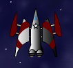 Most players that prefer long range sniping will stick with the Chariot for a while, perhaps 200 kills or so, before switching to the undeniably superior Centaur or Minotaur for this purpose. Ship Cost: 4250. Engine Costs: Enhanced Booster: 4250; Overclocked: 17,000; Enhanced Propulsion: 19,125; Pulse Core: 38,250; Interstellar: 85,000; Enhanced Interstellar: 93,500. Best against: Freighters, Raiders, Strikers, Hunters, Gatherers, Oppressors.Weak against: Weavers, Marauders, Defenders, Enforcers. Back to top Nymph Gun Platform
Cons: Slow... incredibly slow, with limited mining capacity and virtually no long range capability. A suggested load-out: Weapons: Laser Beam, Type 4 Stinger Torpedo. Utilities: Engine Overdrive, Energy Cell, LASS Stealth System. Proximity Weapons: EMP Blast, Proximity Blaster. Engine: Nymph Pulse Core Engine (1.6x top speed, 1.2x boost). How to use it: Get up close and personal! The Nymph was built for knives-out, close in-fighting, and if you're not using the Nymph this way, you're wasting its potential. The closer you get to your enemies, the more the advantage will swing to your favor and away from theirs. The Nymph as extremely tough Shields and among the best manueverability in the game, so don't worry: she can take this kind of close combat. The suggested weapons load emphasizes these sorts of close attacks. As you approach an enemy, fire off the EMP Blast. This will leave them drifting and helpless. If the target is small, finish it off with your space bar Laser Cannon or Laser Beam. If the target is larger, pound on it with the Type 4 Stingers. Finish off targets with your Proximity Blaster, or use that to single-shot kill enemy Drones and Sprinters. Enemy EMP will be your major weakness. In particular, enemy Drones carrying EMP Torpedoes should be destroyed with your Type 4 Stingers at medium range (3000 distance or so) before they can get close enough to fire these torpedoes.
Ship Cost: 2500. Engine Costs: Enhanced Booster: 2500; Overclocked: 10,000; Enhanced Propulsion: 11,250; Pulse Core: 22,500; Interstellar: 50,000; Enhanced Interstellar: 55,000. Best against: Drones, Heavy Drones, Freighters, Conquerors, Strikers, Raiders, Hunters, Oppressors.Weak against: Fighters, Weavers, Marauders, Gatherers, Enforcers. Back to top Hawk Combat Vessel
Cons: Is a hard ship to get excited about; doesn't do anything particularly well. A suggested load-out: Weapons: Type 4 Stinger Torpedo, Laser Beam. Utility: Engine Overdrive, Holographic Disguise. Mine: XHE Time Mine. Proximity Weapons: Proximity Blaster. Engine: Enhanced Interstellar Hawk Engine (with Hyperspace Recharger). How to use it: Despite their completely different appearances, the Hawk and the Centaur could be brothers. They have lots of similarities. In particular, their Shields, locking angle, acceleration, and maneuverability are all identical. In addition, their add-on slots are very closely aligned. The Centaur gets four forward Weapons while the Hawk only gets two, but the Hawk gets a Mine slot and some extra speed, both of which are very useful to many Starfighter players. Their Utility slots and the single Proximity weapon per ship are the same. The strength of the Hawk is versatility: it is one of only four human ships that has all four types of add-ons (the others are the Eos, Atlas, and Hydra). The weakness of the Hawk is tied up in its strength: while it has every type of add-on, it doesn't fulfill any combat role particularly well. It's a jack of all trades, but a master of none. The best way to use a Hawk is probably to concentrate on it as a mid-tier dogfighter, particularly using high-speed harrassment tactics. The recommended load-out emphasizes these merits. In particular, the Holographic Disguise will prevent guided weapon and Tractor Beam locks, and is not defeated by an EMP weapon the way other stealth systems are. When both this and Engine Overdrive are active, the Hawk can make several high-speed passes over foes, firing all of its weapons, the Type 4 Stingers on far approach, the Laser Beam on close approach. It can then drop an XHE Time Mine or two (think of them as grenades; they explode after a couple of seconds regardless of contact, doing splash damage) as it passses over each opponent, then finish off weakened ones with the Proximity Blaster. This will create a symphony of chaos around the Hawk's targets and often allow it to escape the pass relatively unscathed, since most opponents will not be able to land very many solid blows on such a fast, aggressive target. However, particularly well-shielded targets and particularly fast targets like Marauaders and Raiders will probably shrug off such rush attacks unless the Hawk pilot is very skilled or very lucky. Normally, human ships make excellent dogfighters, and the Hawk can be a fair one. The downside it has in this arena is its size: it is unusually large for a human ship, particularly a human ship with so few Weapon slots. The alien analogue to the Hawk (the Shredder) is nearly half its size, emphasizing this strength. The Hawk has no such benefit and as a result, there are much better pure dogfighter choices than this ship. 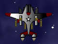 The downside to the Hawk in this role is lack of endurance. With only average maneuverability, and dropping weapon ammunition and energy as quickly as the Hawk is likely to be using these tactics, it will be unlikely that the pilot will pick up enough drops to remain in a given sector for very long. Still, this is a tremendously fun, engaging way to play Starfighter, and one that players in MP sectors in particular will have a hard time defeating. In Single Player sectors, however, the Hawk is hard to recommend since its lack of specialization and its limited endurance will make kill-farming much slower than it has to be. Ship Cost: 2750. Engine Costs: Enhanced Booster: 2750; Overclocked: 11,000; Enhanced Propulsion: 12,375; Pulse Core: 24,750; Interstellar: 55,000; Enhanced Interstellar: 60,500. Best against: Drones, Heavy Drones, Fighters, Weavers, Sprinters, Conquerors.Weak against: Shredders, Raiders, Destroyers, Oppressors, Enforcers. Back to top Centaur Attack Ship
Cons: A little slow, and not quite as maneuverable as it should be to compensate. A suggested load-out: Weapons: Positronic Convergence Disc, Type 4 Stinger Torpedo, Thunder Bolt Torpedo, Laser Beam. Utility: Engine Overdrive, Energy Cell. Proximity Weapons: Proximity Blaster. Mining Laser: Type 3 Mining Laser. Engine: Centaur Pulse Core Engine (1.6x top speed, 1.2x boost). How to use it: The Centaur is an excellent ship, a near-perfect upgrade for an Argonaut pilot once you start to face Thunder Bolt weapons. In many ways, the Centaur is a super-Argonaut, with tougher Shields and a better (near-perfect) weapon load-out. Unlike the alien version, it's also a ship that doesn't lose too much of the Argonaut's small size for dodging unguided weapons. What you sacrifice in making the trade is some speed and some manueverability, plus Mine slots that you might have gotten used to using. That said, the Proximity Blaster is a much-superior trade for the Mine slots and offsets much of the Centaur's dogfighting maneuverability problems. You'll find it's a very good trade, particularly since the Prox Blaster can one-shot-kill many of the ships that are an annoyance to slower ships, namely Drones, Heavy Drones, and Sprinters, and can seriously damage Fighters and Weavers. This will allow the Centaur pilot to pick up frequent drops and keep both the Prox Blaster and his or her other weapons loaded. A Damage Bubble or Thunder Bolt proximity weapon will make the Centaur vulnerable to swarms. The biggest strength of the Centaur is its up-front weapons mix, with four forward weapon slots. I recommend a good mix of medium and short range weapons be loaded. As targets approach, they can be attacked with Positronic Convergence Discs, then Type 4 Stinger Torpedoes. The Type 4 Stinger is also an excellent short-range weapon for targets that attempt to flee the Centaur; I find it does its best damage to the rear of enemy targets whereas PCDs seem to do the most damage when hitting targets head on. Tougher targets with better maneuverability than the Centaur (Defenders and Shredders, primarily) can be met with a Thunder Bolt Torpedo, which will act as a force mutiplier for the ship's other weapons. A Laser Beam rounds out the recommended weapons mix; this can be traded for a Plasma Cannon as the Centaur pilot gains confidence with his or her gunnery. The Centaur is one of the ships that really needs the Pulse Core Engine upgrade rather than a Hyperspace Recharger. I realize the Hyperspace Recharger is popular, but the Centaur truly needs the speed upgrade to be effective in combat. 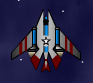 The Centaur's low speed and only average fighter maneuverability are her key weaknesses; the ship should really have a maneuverability rating of 4, not 3, to balance its slow speed. Some ships with a lower maneuverability rating (such as the Iris) are given a wider weapon locking angle to compensate, but the Centaur is not given this advantage. As a result, flying a Centaur in close combat can sometimes be quite frustrating. It's particularly weak against highly maneuverable ships with tough Shields, such as the Marauder, Defender, and Enforcer. Still, it's an excellent, well-balanced craft with a lot to recommend it. It's also one of the few ships that I actually recommend doing some serious mining in from time to time. The Centaur's mining bay is relatively large and it's maneuverable enough to make such work worthwhile when you're not actively killing things. Ship Cost: 3000. Engine Costs: Enhanced Booster: 3000; Overclocked: 12,000; Enhanced Propulsion: 13,500; Pulse Core: 27,000; Interstellar: 60,000; Enhanced Interstellar: 66,000. Best against: Drones, Heavy Drones, Fighters, Weavers, Sprinters, Conquerors, Guardians.Weak against: Marauders, Defenders, Destroyers, Enforcers. Back to top Minotaur Assault Ship
Cons: Thin Shields and very poor maneuverability make it extremely vulnerable at close range. A suggested load-out: Weapons: Long Range Photon Bombs, Positronic Convergence Disc, Type 4 Stinger Torpedo, EMP Torpedo, Thunder Bolt Torpedo (x2). Utility: LASS Stealth System. Mines: Thunder Bolt Mines. Engine: Enhanced Interstellar Minotaur Engine (with Hyperspace Recharger). How to use it: The fact that the Minotaur can move around at all is nearly irrelevant. The ship is essentially a mobile Defense Turret and is best used as such. Its single Utility slot and relatively thin Shields (150) make it an extremely poor choice for fly-by or fly-over attacks. In fact, like the somewhat similar Medusa, the Minotaur should never get any closer than 1500 distance from its enemies, and any enemy that penetrates to within that distance should be met with one or both of the Minotaur's Thunder Bolt Torpedoes. Anything that comes closer still should have the ship's two Thunder Bolt Mines dropped on it while the Minotaur moves away on boosters. If the target isn't destroyed, the Minotaur pilot has only one good choice: escaping into hyperspace. As a result, I have not recommended any close range weapons for the Minotaur, nor any unguided weapons. Both would be actively counter-productive for this ship class. A Minotaur that enters a dogfight has lost before the fight has begun; the ship is in no way capable of such fighting. It is too large, too slow, its Shields are too thin, and its turn rate is too poor. Instead, its human-best six weapon slots for a fighter should all be devoted to medium and long range weapons, and the Minotaur should stay at the periphery of the battlefield. As threats approach the ship, they should be attacked by the ship's Positronic Convergence Discs, Long Range Photon Bombs, and Type 4 Stinger Torpedoes, in roughly that order. PCDs do terrific damage to targets as they close with the Minotaur, especially fast targets, such as those approaching on Engine Overdrive. I recommend an EMP Torpedo, and this torpedo should be launched at particularly tough, maneuverable targets (such as Enforcers and Defenders) just before one or both Thunder Bolt Torpedoes are launched at them; this will limit the damage the Minotaur takes while the Thunder Bolts do their work. I also recommend a LASS as the Minotaur's single Utility for this reason. It will allow the Minotaur to launch all of its ordnance before it is forced to flee the sector. Anything with greater Shields than the Minotaur and a similar weapon load (Destroyers, in particular) will be the bane of this ship class. In addition, if the Minotaur gets swarmed, she's done; she's incredibly vulnerable to small fast dogfighters. The Minotaur can dish it out, but she can't take it. 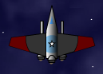 As a result, while this strategy will work for limited durations, the Minotaur has abysmally poor endurance. Once its Thunder Bolt Torpedoes are expended or once it starts taking weapon damage at all, the smart Minotaur pilot will leave the sector and start over in a new one. The good news is that if this strategy is employed, the Minotaur will rack up a lot of kills, particularly against ambushes, against which it shines. The bad news is that flying a Minotaur correctly is rather dull. It would have been a great ship to unlock at 26 kills. By the time humans earn this ship, though, they should have sufficient piloting and gunnery skill not to need it. Ship Cost: 4250. Engine Costs: Enhanced Booster: 4250; Overclocked: 17,000; Enhanced Propulsion: 19,125; Pulse Core: 38,250; Interstellar: 85,000; Enhanced Interstellar: 93,500. Best against: Freighters, Protectors, Raiders, Hunters, Gatherers, Oppressors.Weak against: Marauders, Defenders, Shredders, Destroyers, Enforcers. Back to top Atlas Mining Vessel
Cons: Near-useless as a fighting vessel, can only defend itself from single attackers. A suggested load-out: Weapons: Laser Beam, Positronic Convergence Disc. Utilities: Engine Overdrive, Energy Cell, LASS Stealth System, Field Hopper. Mines: Thunderbolt Mines. Proximity Weapons: Thunderbolt Proximity. Mining Laser: Type LR 3 Mining Laser. Engine: Standard Atlas Engine. How to use it: The Atlas Mining Vessel is the most specialized ship in the game in terms of its use in Starfighter. As a matter of fact, there's only two good places to buy one and only one good reason to buy one. If you need a lot of money quickly, the Atlas is the way to go. Travel to Sector S-18-19. This is where you're going to buy your Atlas. Equip it as I have suggested, leave the Substation, and travel by Engine Overdrive to S-18-18. This is a mining sector, a sector with many asteroids, and these asteroids are very rich in ore. It is possible to fill even the Atlas's 5000 capacity mining bay in under two minutes, then use Engine Overdrive to return to S-18-19 for delivery. (The second possible location to purchase an Atlas is S-12-12, using S-12-13 as your mining sector, but this is more dangerous due to the increased Threat level of these sectors.) If you grind mining in this manner, you can make at least 250,000 money per hour with a good computer. 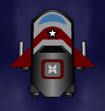 The Atlas's near-impregnable Shields will definitely help you here, and the suggested load-out will help you repulse any minor attacks that you come under. If when you enter 18-18, you find a large number of enemies, activate your LASS. If there are a smaller number of enemies, don't bother. They'll come in to attack you; let them. Your Positronic Convergence Discs are your primary long-term defense: use them as your enemies approach. If the attack only involves a ship or two, your Laser Beam and Energy Cell should allow you to repulse it. Activate your Thunderbolt Proximity weapon if the ships are strong. If the ships are very strong, then drop your two Thunder Bolt Mines, then immediately activate your Field Hopper! This will get you out of the way of the mines and should destroy the ships you left where you were. Beyond this, there isn't much to say. Honestly, there really isn't much use to the Atlas Mining Vessel; by the time you need the very large sums of money that the Atlas will afford you by mining, you should be able to make near-equivalent money through Bounties and Clearance missions. Ship Cost: 11,250. Engine Costs: Enhanced Booster: 11,250; Overclocked: 45,000; Enhanced Propulsion: 50,625; Pulse Core: 101,250; Interstellar: 225,000; Enhanced Interstellar: 247,500. Best against: Can defend itself against most single opponents, other than Destroyers and larger.Weak against: Large groups, particularly ambushes. Back to top Warship
Cons: Limited maneuverability makes it vulnerable to multiple small attackers up close. A suggested load-out: Weapons: Laser Beam, Positronic Convergence Disc, Type 1 Stinger Torpedo, Photon Bomb, Thunder Bolt Torpedo. Utilities: Engine Overdrive, Energy Extraction Beam. Proximity Weapons: Proximity Blaster. Large Weapon: Player's Choice. Engine: Enhanced Interstellar Warship Engine (with Hyperspace Recharger). How to use it: The Warship is a bit of a specialized vessel and it's actually only really good at one thing: destroying Defense Turrets and other ships as big as it is. The suggested load-out is built toward that end. The Positronic Convergence Discs will destroy long range threats to the ship. As enemies come closer, the Warship Captain can switch to Type 1 Stingers (which do a surprising amount of damage!), then the Laser Beam and Proximity Blaster for close-range personal defense. The Warship has extremely tough Shields (350), so rewards a patient style. Large targets such as Gatherers and Defense Turrets should be destroyed by alternating Photon Bombs (most efficient against large targets) and the Energy Extraction Beam (to fuel the Photon Bombs). I personally like to orbit Defense Turrets at high speed using Engine Overdrive until they run out of missiles; other players prefer using the LASS or Holographic Disguise to defeat missile locks entirely. Tough, fast targets can be destroyed or weakened with the Thunder Bolt Torpedo. The Warship is best used in hit-and-fade attacks, since it will be fairly rare that you pick up bonuses with this ship. The ship's turn rate is too slow to really take advantage of bonuses unless they fall right in front of you or right behind you. As a result, if you take the Warship on hunting expeditions, you'll mostly be destroying your limit of targets until you run out of some key ammunition or energy, then retreating from the sector to reload. 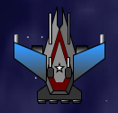 The Warship is the first ship humans have access to that includes a Large Weapon. In Multiplayer sectors, the Plasma Relay is popular; it does about 225 points of damage in cylindrical cone in front of the ship, which is often enough to kill most ships, particularly if they've already been weakened. In Single Player sectors, the Vortex Bomb is often a better choice. Warships deal with ambushes by herding everything in the sector to a central point (often using Engine Overdrive or boosters). Simply orbit AI ships for a while; they'll eventually cluster in the center of your orbit as they try to catch you. Once they're nicely clustered, fly into the cluster and drop your Vortex Bomb... and you'll likely kill every hostile in the herd. The Warship (and the Medusa which is based on it) are the most "love it or hate it" ships in the game. Either you will "get" this ship or you won't. Ship Cost: 15,750. Engine Costs: Enhanced Booster: 15,750; Overclocked: 63,000; Enhanced Propulsion: 70,875; Pulse Core: 141,750; Interstellar: 315,000; Enhanced Interstellar: 346,500. Best against: Defense Turrets, Freighters, Strikers, Protectors, Gatherers, Destroyers, Oppressors.Weak against: Defenders, Marauders, Enforcers. Back to top Medusa Battleship
Cons: Anything closer than 1000 distance is an immediate and mortal threat unless the Medusa flees. A suggested load-out: Weapons: Long Range Photon Bombs, Positronic Convergence Disc (x2), Type 4 Stinger Torpedo, Thunder Bolt Torpedo (x2). Mines: Thunder Bolt Mines (x2). Large Weapon: Large EMP Bomb. Engine: Enhanced Interstellar Medusa Battleship Engine (with Hyperspace Recharger). How to use it: Much of the text associated with the very similar Warship applies to the Medusa as well. If anything, the Medusa is even more specialized than its smaller cousin. Its lack of Utility slots is an enormous weakness to this class; it reduces the versatility and survivability of this ship tremendously. Without Utilities such as a stealth system, Engine Overdrive, Field Hopper, or a Tractor Beam, virtually all of the traditional means of escape from being outnumbered are not available to the Medusa Captain. As a matter of fact, anything that gets within 1500 of the Medusa should be greeted with one or both of the Medusa's Thunder Bolt Torpedoes, followed by its Thunder Bolt Mines. The Medusa should then activate boosters to escape the damage from the mines, then flee into hyperspace if the enemy isn't destroyed. For this reason, I'm not recommending any close range weaponry for the Medusa; such weaponry would be not only beside the point, but actively counter-productive. Instead, long range weapons should be and are the Medusa's forte. In point of fact, Medusae should do all their fighting at about 4000 distance. In particular, Positronic Convergence Discs should be targeted on anything approaching the Medusa, but more than 2000 distance away. The Type 4 Stingers and Long Range Photon Bombs should be used against anything not directly approaching the Medusa, or anything approaching the Medusa that gets closer. If anything comes closer still... Thunder Bolt. 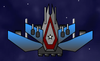 Some Medusa Captains prefer hit-and-run fly-over attacks; I consider these to be massively risky for the Medusa. All it takes is a single ship being flown over to have a Tractor Beam, and the Medusa's tactical options are gone; it will be quickly surrounded, overwhelmed, and destroyed. Long range sniping really is the only way to go with this ship. For this reason, Large Weapons are not as much use to the Medusa as for other large warships; in fact, there's only one good choice, the Large EMP Bomb. This weapon will disable any allied ships that exist in the area, but since it will disable enemy ships too, this will give the Medusa a free hand to destroy targets near and far with its weapons while the EMP is having its effect. Ship Cost: 15,750. Engine Costs: Enhanced Booster: 15,750; Overclocked: 63,000; Enhanced Propulsion: 70,875; Pulse Core: 141,750; Interstellar: 315,000; Enhanced Interstellar: 346,500. Best against: Defense Turrets, Freighters, Strikers, Protectors, Gatherers, Destroyers, Oppressors.Weak against: Sprinters, Fighters, Weavers, Shredders, Marauders, Enforcers. Back to top Hydra Destroyer
Cons: Is only really useful up close, has very limited long range striking options; thinner Shields than most ships its size. A suggested load-out: Weapons: Positronic Convergence Disc, Plasma Cannon. Utilities: Engine Overdrive, Energy Cell (x2), Rapid Shield Recharger. Mines: Thunder Bolt Mines. Proximity Weapon: EMP Blast. Large Weapon: Player's Choice. Engine: Pulse Core Hydra Destroyer Engine (1.6x top speed, 1.2x speed booster). Update for Starfighter version 1.3: As of Starfighter: Disputed Galaxy version 1.3, the Hydra's speed has been reduced from 12 to 9, and its price has been reduced from 6750 to 5750. This reduces the Hydra's rank as a Utility craft from an A- to a B, as it will take much longer to perform utility missions such as mining. All references to the Hydra being "fast" have likewise been removed; for this reason, its rank as a dogfighter has been reduced from A- to B+, as it is tougher to dodge weapons at the lower speed, making the Hydra less survivable. How to use it: Used correctly, the Hydra is the single best ship in the game, a near-unstoppable engine of destruction. I personally use this ship, and have racked up 29,000 kills with it as of this writing, while maintaining a kill ratio of over 100 to 1: 100 kills for every time I've died. The Hydra is maneuverable and has excellent Shields; while not as good as other warships, the Hydra compensates both by being very small (size factor 10, smaller than many fighters!) and by being somewhat resistant to many forms of Alien weaponry. In many ways, the Hydra is a bit of a super-Nymph. It has many of the same strengths and weaknesses. The weaknesses are its speed, which is below average, and it carries only two primary weapons. You're going to need to pick up a lot of bonuses to stay in a battle. This will reward a dogfighting style. However, the Hydra's maneuverability will make this very easy. By this point in the game, you should be completely proficient with Plasma Cannons, and you'll find these weapons a perfect fit for your new Hydra. Longer-range targets can be destroyed with the Positronic Convergence Discs, mostly drones fitted with EMP and Thunder Bolt Torpedoes, both of which are the bane of this ship class. Any Proximity weapon is a good choice. I personally prefer the EMP Blast, as it defeats the third bane of this class: Tractor Beams. However, virtually any of the Proximity weapons will be of value to the Hydra Captain. The true strength of this class is the human-best four Utility slots. This makes the Hydra the humans's most versatile ship, and again, there are as many Utility load-outs as there are Hydra Captains. The load-out that I've recommended is the one I use myself, and is a very aggressive load intended to keep the Hydra in nearly continuous combat. You'll find it a very useful load for visiting (and living in) Threat 1 sectors. The correctly piloted Hydra should only rarely require its mines; it's fairly rare that the Hydra will need to flee from a battle. As a result, Thunder Bolt Mines are your best choice, and the best place to use them is against large targets such as Gatherers, which Hydras will have a problem with due to the energy requirements of pounding them to dust with Plasma Cannon. Instead, do a fly-by, dropping the mines as you pass. Stay out of the area for 15 to 20 seconds, then return and you should find a much-weakened Gatherer. 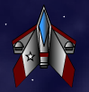 Finally, the Large Weapon slot is left to the whim of the player. In MP sectors, the Plasma Relay will often be your best choice. It does about 225 points of damage in cylindrical cone in front of the ship, which is often enough to kill most ships, particularly if they've already been weakened. In Single Player sectors, the Vortex Bomb is often a better choice. Hydras can deal with ambushes by herding everything in the sector to a central point (often using Engine Overdrive or boosters). Simply orbit AI ships for a while; they'll eventually cluster in the center of your orbit as they try to catch you. Once they're nicely clustered, fly into the cluster and drop your Vortex Bomb... and you'll likely kill every hostile in the herd. The Hydra is so good that it is often accused of being unbalanced. I'm not sure I hold that strong a view, but it is clearly the best single ship in the game, and most human players will have a blast when they finally get their hands on one. Ship Cost: 5750. Engine Costs: Enhanced Booster: 5750; Overclocked: 23,000; Enhanced Propulsion: 25,875; Pulse Core: 51,750; Interstellar: 115,000; Enhanced Interstellar: 126,500. Best against: Almost everything.Weak against: Defenders, Gatherers, Destroyers, Oppressors. Back to top Admiral Class Warship
Cons: Two Large Weapons is a bit of a curse if you like to do any kill-farming. A suggested load-out: Weapons: Positronic Convergence Disc, Type 1 Stinger Torpedo, Thunder Bolt Torpedo, Laser Beam. Utility: Energy Cell, Teleport Disc. Proximity Weapons: Thunder Bolt. Large Weapons: Plasma Relay, Large EMP Bomb. Mining Laser: Type 3 LR Mining Laser. Engine: Enhanced Interstellar Admiral Engine (with Hyperspace Recharger). How to use it: The Admiral is obviously an improvement on the human Warship, but it's also interesting how many similarties this ship has to the Centaur, as well. When compared to the Warship, the Admiral receives a +1 bonus to its maneuverability (to a 2 Rating) and a +1000 bonus to its Mining capacity (to 3000). It also trades in one standard Weapon for a Large Weapon. When compared to the Centaur, though, the weapon load out is the same, save for the two Large Weapons the Admiral receives. It is also faster than the Centaur and has much superior Shields and locking angle. The Centaur has much superior acceleration of course, but with the "X" key, the Admiral can get up to combat speed quickly. As a result, it is interesting to fight in the Admiral as if one is fighting in a sort of super-Centaur. The same sort of tactics work well in the Admiral, and makes the ship rather terrifying for your enemies to deal with. I recommend Positronic Convergence Discs for long range combat, but really, the Warship has no particular weaknesses in closer combat, and as a result, most of the weapons I recommend for the Warship work best at a range of about 500-1200 distance. In particular, open a close combat with the Thunder Bolt Proximity Weapon. This will do much to announce your presence on a battlefield and the Thunder Bolt will act as a force multiplier for your other weapons. As your enemies close within 2000 distance, first, deploy a Large EMP Bomb, then harrass them with Type 1 Stinger Torpedoes. These are excellent close combat missiles that will do about 20 Shield damage per hit, and are very difficult to avoid due to their excellent maneuverability. When enemies come even closer, activate your Laser Beam and fire three shots. About this time, your Large EMP Bomb should go off, rendering all nearby enemies helpless. Activate both Energy Cell uses in sequence, then dive into the crowd. Energy Cells stack, so your Energy level will rapidly climb. Switch back to your Laser Beam and you will find that you are able to fire nine additional times! Between this and your Thunder Bolt Proximity Weapon, you will be able to do more than 700 Shield damage to nearby foes in under 15 seconds, likely before the effects of the EMP Bomb have even worn off. This is a horrifying amount of damage that will be nigh-unstoppable against ambushes or in Multiplayer sectors against the toughest opponents... and you haven't even launched your Thunder Bolt Torpedo or used your Plasma Relay yet, which between them give you another 350 points of Shield damage against your very toughest opponents. 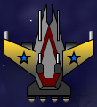 You will mostly be using the Admiral to take on enemies in like ships such as the alien Elite Destroyer, and as a result, I recommend carrying a Teleport Disc as your second utility. You will more than likely be facing Ultra Vortex Bombs, and the Teleport Disc will rapidly get you out of their area of effect once you see or hear one of these being launched. If you're quick enough, a Teleport Disc or two fired before the Ultra Vortex Bomb's EMP effect takes hold, along with your tough shields, should keep you fairly safe until the UVB effects wear off. Particularly aggressive or particularly defensive-minded players can switch out the Teleport Disc for an Engine Overdrive utility instead. I prefer the Teleport Disc because the distance you jump is predictable and you can use the TD to jump immediately back into melee with your enemies. Oh, and don't forget about mining! The Admiral has an enormous mining bay and keeping it full will go a long way toward paying for those expensive Large Weapons... Because of the superiority of alien long-range weapons, the Admiral is not quite as good a ship as the alien Elite, and I recommend different tactics for the Elite due to the strength of alien long-range weapons. But as a space superiority craft, the Admiral is very tough to beat. The one problem that you're going to have is endurance. The fact that you have to trade one standard Weapon for a Large Weapon is a blessing... but it's also a curse since Large Weapons don't reload when you enter a new sector. The Admiral is a horrifying sight to behold... for the minute or so that her weapons hold out. During this period, you'll be an unstoppable killing machine. Once this period is over, though, it's time to jump out of the sector to restock. Ship Cost: 9500. Engine Costs: Enhanced Booster: 9500; Overclocked: 38,000; Enhanced Propulsion: 42,750; Pulse Core: 85,500; Interstellar: 190,000; Enhanced Interstellar: 209,000. Best against: Defense Turrets, Freighters, Strikers, Protectors, Gatherers, Destroyers, Oppressors.Weak against: Nothing, as long as its Energy holds out. Back to top
| ||||||||||||||||||||||||||||||||||||||||||||||||||||||||||||||||||||||||||||||||||||||||||||||||||||||||||||||||||||||||||||||||||||||||||||||||||||||||||||||||||||||||||||||||||||||||||||||||||||||||||||||||||||||||||||||||||||||||||||||||||||||||||||||||||||||||||||||||||||||||||||||

{kind=link}
{kind=link}
{kind=link}
{kind=link}
{kind=link}
{kind=link}
{kind=link}
{kind=link}
{kind=link}
{kind=link}
{kind=link}
{kind=link}
{kind=link}
{kind=link}
{kind=link}
{kind=link}
{kind=link}
{kind=link}